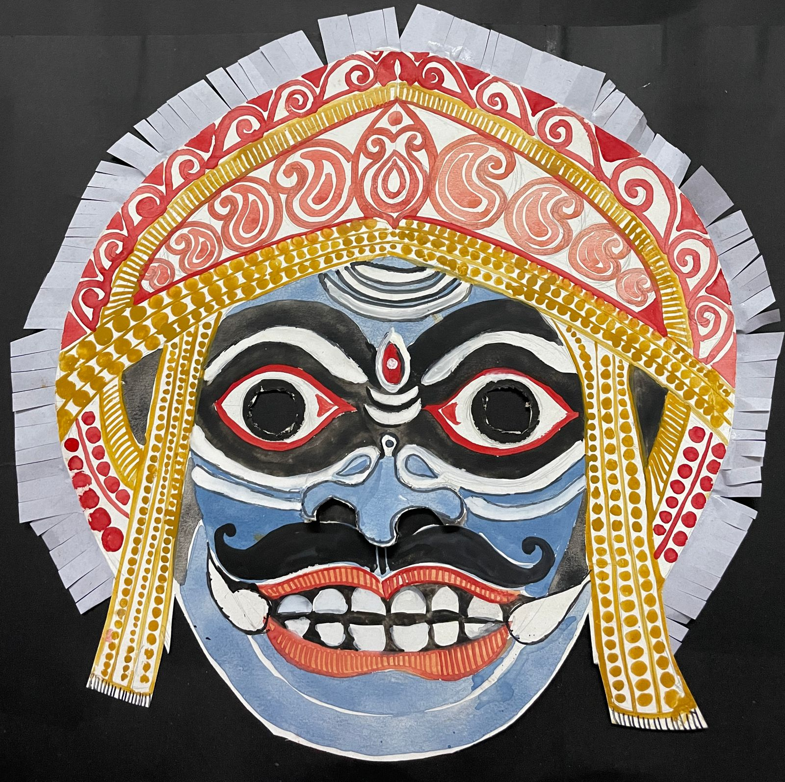

Asura Mask - Chhau Dance, Watercolor on mount board with paper decorations, Haimonti Dutta
The Chhau dance of eastern India (Purulia, Mayurbhanj and Seraikella) is an ancient,
indigenous art form combining dance and martial arts often accompanied by drums, folk music
including reed pipes (mohuri) and shehnai. This dance form has been
declared an intangible cultural heritage by UNESCO and is particularly attractive for its use
of elaborate masks depicting characters from epics such as the Mahabharat and Ramayana.
In the above mask re-creation, Asura -- the demon god, is studied, and some aspects of an
ornamental art form - alpona are thrown in, to add vivacity.